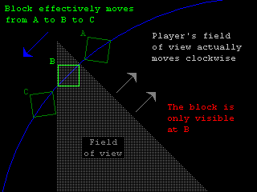
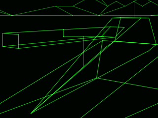
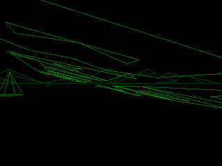
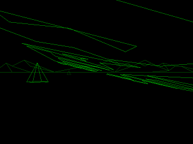

By Lee Davison.

|
|
By Lee Davison. |
|
The Battlezone worldI've had one of these machines, a full size periscope model, for many years now. The smaller cabiret model was picked up a few years later. The first one, bought from a second hand shop, cost twice as much to ship as it did to buy. The second, rescued from ending up in a skip after the wiring loom had caught fire, was a freebie but was in a pretty sorry state when I got it.
Nice touchesBattlezone is essentially a 2D tank game with a 3D first person perspective view. A 360 degree background made from eight 2D tiles provides the illusion of distant mountains with a cresent lit Earth in the sky. This background is infinitely far away, actually outside the game area, and never gets any closer no matter how long you continue in one direction.
The game area itself is a square that wraps round in both axes, the player can see almost half way across this area. There are twenty one objects populating this otherwise featureless world, eleven pyramids and ten cuboids. These are scattered in an apparently random but fixed pattern across the game area.
As well as the passive scenery there are also objects for the player to interact with. Tanks that move like the player's, missiles that appear to drop from the sky and super tanks that turn and move quicker than the player's tank can. As well as these hostile objects there are saucers that only distract the player by offering a high point score for their destruction.
There are some objects that, though they never appear for long, add to the game. These are the objects that make up the fragments of tank, super tank or missile that you see fly apart in gracefull parabolic paths.
Finally there is the huge Battlezone logo that is only seen on the attract screen that is really three objects with a common origin that are always seen together.
Subtle bugsThere are some really good effects in the game, some of them are easy to overlook. The most noticeable is the volcano with it's random spew of glowing rocks, it's pleasant just to watch it sometimes, until you get killed for daydreaming that is.
The crescent lit Earth in the sky shows Eastern Australia and part of Alaska, I think, in the lit part. That's a nice touch that gives the play area a really really big feel to it.
When you kill something it explodes. But each enemy, tank, super tank and missile, explodes into different bits. No two explosions are quite the same either.
The player's gunsight changes when a target is near the centre of view, the new sight has fine central lines for that genuine 'enemy in your sights' feel, this little touch adds quite a bit to the feel of the game. Also the player's gunsight flashes while a player's shell is in flight. This continues until the shell hits something and explodes, which is itself an animated event, or the shell runs out of range, then the player can fire again.
The missile has an animated 'shadow' that it casts on the ground even when it's too high up to be seen. This gives the player an 'it's over there' cue as it drops from the sky.
The enemy tank's tracks are animated, but just the end you can, sometimes not quite, see. This is an early example of hidden line removal.
The size of the player, as a target, changes depending on the approach of the shot. You are a much smaller target when being shot at from behind.
Unlike some arcade games this one is almost bug free. Even the bugs that do exist don't affect gameplay much so this is more of a subtle undocumented features list.
 Missing bitsSometimes while turning, blocks will flash into view at the edge of the monitor but then disappear as they move towards the centre of the view. This is because the field of view is terminated by a straight line at a fixed distance in front of the player, which is quicker to calculate, and not a radial distance. See the image to the right.
You can run into blocks you can't see but should be able to. Close up blocks pop out of the player's view just before the player's tank passes them, this means the player can get caught up on something that seems not to be there. Distant objects popping in and out of view is no problem as there's no chance of hitting them but the close up pop outs can be a real nusiance, especially when playing 'peek a boo' with the enemy.
When playing the game tanks become super tanks after the sixth missile, but they become normal tanks again after the 129th missile, usually somewhere around the 800,000 points score. Super tanks then don't reappear until after the 262nd missile, and something like 1,600,000 points, have been and gone. For most players though that is never. Presumably an eight bit counter is being used as the 257th missile comes straight at you from directly ahead, just like the first one did. I would expect that this cycle then repeats - but I've never been that bored.
Another counter problem is with the game credits which I found out when using one of my games as an interactive piggy bank. If you put in enough credit for 256 games you end up back at the INSERT COIN attract screen. This probably never happened in an arcade but it could have done so.
Bent bitsOne curious thing I've noticed is that the super tank is missing a vertex, the top left edge of the gun barrel has gone awol!
Normally you would never see this as the top edge of the super tank's gun is at the player's eyesight level, so this edge would be behind or in front of the other barrel edges. However when you collide with something the viewpoint is shifted upward briefly to simulate the shock of the collision, when you collide with a super tank you can see where the vertex should be but isn't.
I'm not sure why this was done, not to save space as it only saves a couple of bytes, but I think the top edge of the super tank's gun barrel would look a bit too bright otherwise. If my curiosity ever gets the better of me I'll fix the missing vertex and try it out on one of my machines.
One one of the attract screens the game logo drifts gracefully up the screen and off into the distance. What you never notice, because it can't be seen from the usual angle, is that the A in BATTLE is bent out of shape. If you modify the game so you can wander about the world as you will however, you can see the logo from some unexpected angles.
  These two images are looking along the underside of the logo from beneath the leading edge of the B
More soon ...
Some screenshots made using Mame 0.97
| Last page update: 20th November, 2005. | e-mail me
 |